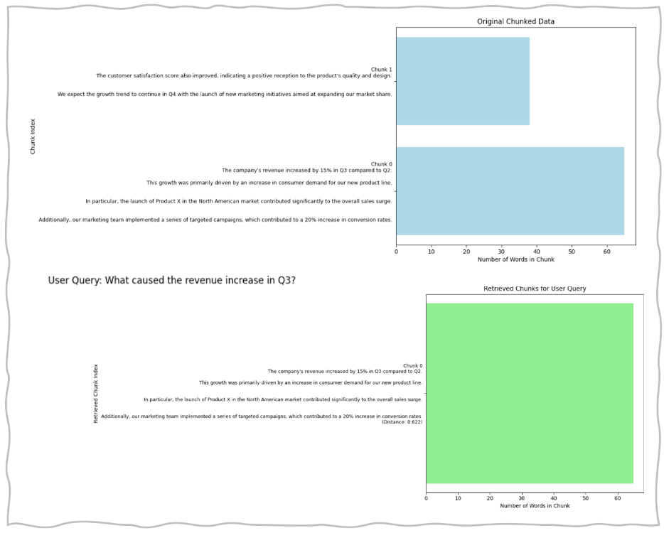

Use Cases
Legal Documents (Law)
Semantic chunking aids in organising sections of legal documents that discuss different charges and evidence of these charges, making the extraction of specific information more efficient for practitioners and legal researchers.
Marketing Reports (Business)
Semantic chunking facilitates the organization of sections in marketing reports that analyse various trends or campaign results, streamlining the process of extracting relevant information for marketers and analysts.
Semantic Chunking Code
Example of Sliding Window Chunking Result



Pros and Cons of Semantic Chunking
| Pros | Cons |
|---|---|
| Ease of Use : spaCy provides a user-friendly interface and pre-built models that make it easy to implement semantic chunking without needing extensive programming knowledge. | Limitations in Chunking : spaCy’ s built-in chunking might not always align with specific semantic needs, potentially necessitating additional fine-tuning or custom rules. |
| Customizability : Users can customize models and pipelines to suit specific requirements, enabling tailored semantic chunking for different domains or applications. | Dependency on Pre-trained Models : The effectiveness of chunking relies on the quality of pre-trained models. In some niche domains, these models may not perform as well without further training. |
| Robust NLP Features : Beyond chunking, spaCy offers a wide range of natural language processing functionalities (like tokenization, named entity recognition, and part-of-speech tagging), making it a versatile tool. | Lack of Contextual Awareness : While spaCy excels at syntactic analysis, it may struggle with deeper semantic understanding in complex texts, which can affect the accuracy of chunking. |